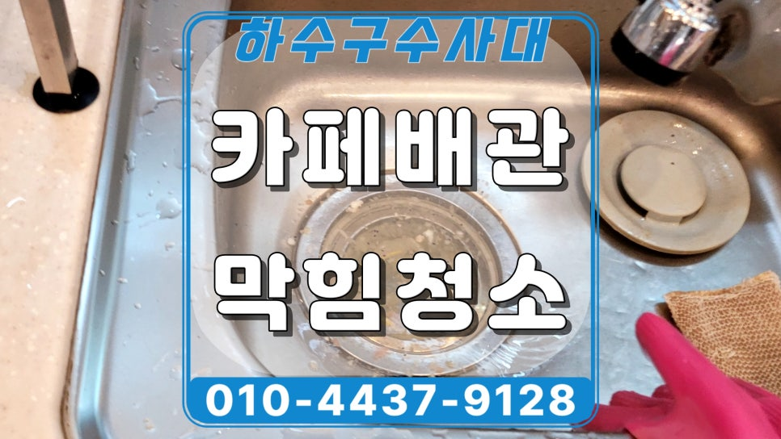
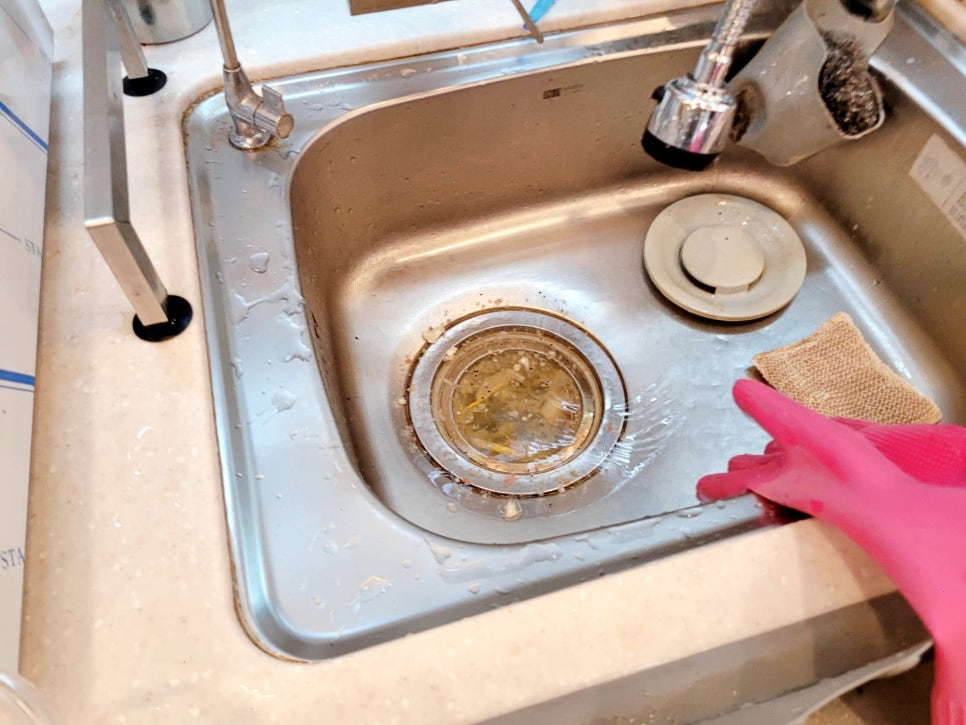
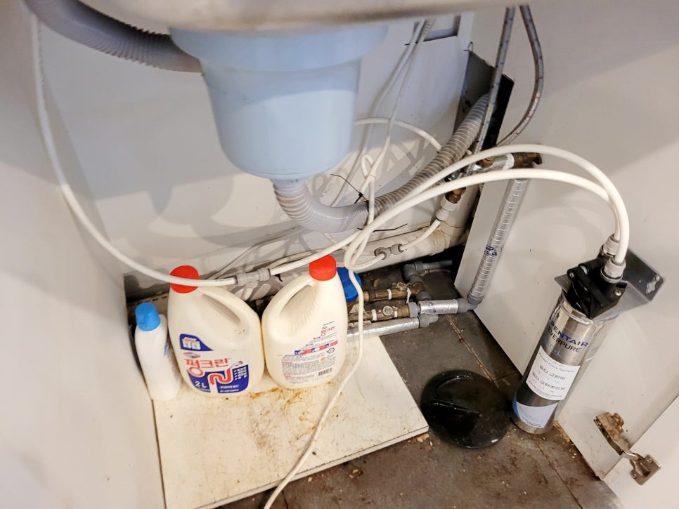
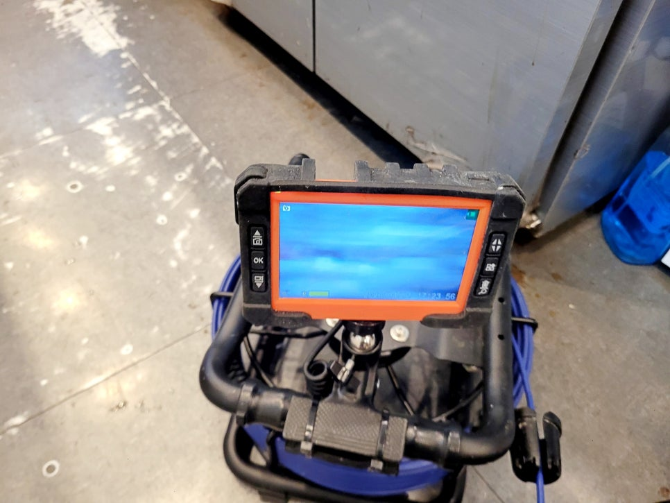
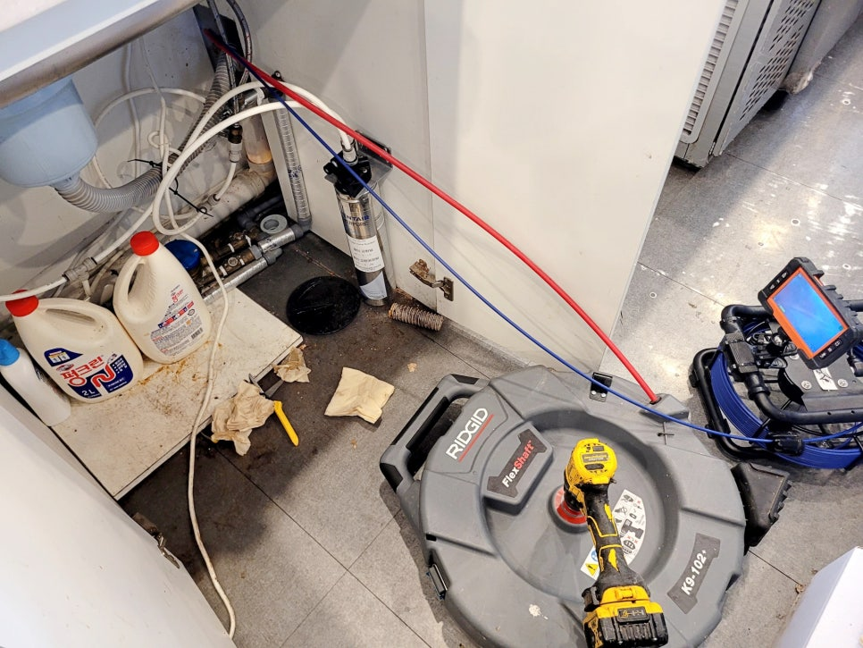
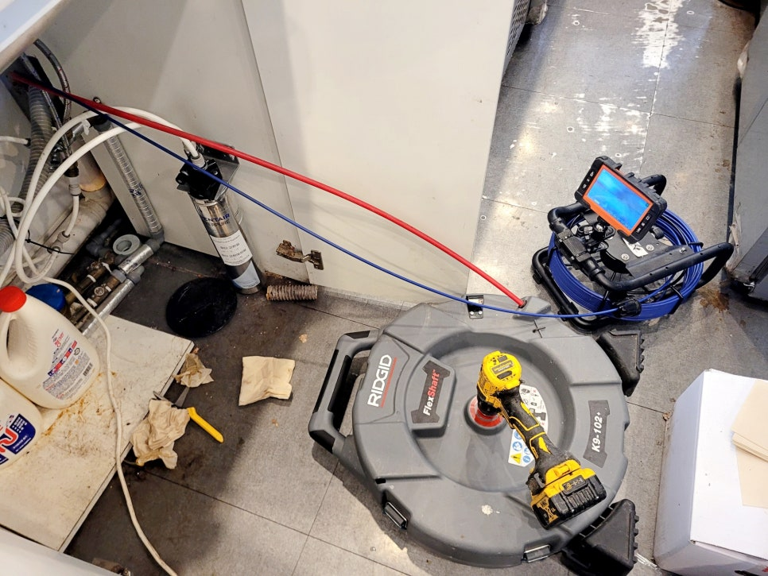
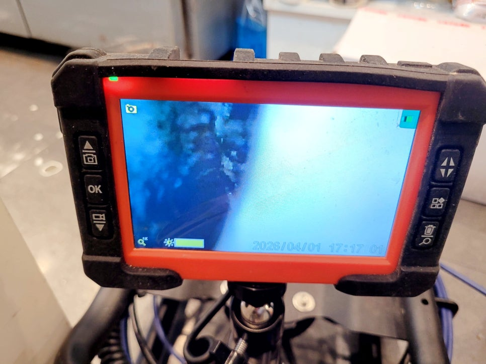

🏠 분당 판교동 카페 싱크대배관막힘, 물넘침 배수구 청소
용인 판교동 싱크대막힘 전문 시공 후기

📋 작업 개요
- 위치: 용인 판교동, 판교동, 용인
- 서비스 유형: 싱크대막힘, 하수구막힘, 배관막힘, 역류해결, 뚫는업체, 배관청소, 고압세척
- 작업 일시: 2026. 4. 30. 10:20
- 업체명: 하수구수사대 (010-5615-2118)
🔍 문제 상황
분당 판교동 카페 싱크대배관막힘 역류,
물넘침 배수구 청소업체 현장 후기
환영합니다.
분당 판교동 카페 싱크대배관막힘
배수구청소 전문 하수구수사대입니다.
오늘 준비한 후기는 판교동에 위치한
커피숍에서 영업 준비 중 싱크대 물이
빠지지 않고 역류해 급히 방문드린
사례인데요.
분당 판교 카페 싱크대배관막힘 역류 현장
싱크대 배수구 주변에는 물이 고이고
음식물과 커피 잔여물이 함께 남아
있었습니다. 겉으로 보기에는 단순히
배수구 주변만 막힌 것처럼 보일 수
있지만, 카페 싱크대는 내부 배관까지
함께 살펴야 합니다.
분당 판교동 싱크대배관막힘 현장
하부장을 열어보니 배관청소용 용액이
놓여 있었는데요.
이런 용액은 냄새나 가벼운 오염에는
일시적으로 도움이 될 수 있지만,
커피찌꺼기와 유분이
굳어 덩어리처럼 뭉친 경우에는
근본적인 해결이 어렵습니다.
판교동 카페 싱크대배관막힘 현장 개요
1. 장소 : 분당 판교동 카페

🔎 원인 분석
💡 전문가 진단: 분당 판교동 카페 싱크대배관막힘 역류,물넘침 배수구 청소업체 현장 후기
💡 전문가 진단: 분당 판교동 카페 싱크대배관막힘 역류,물넘침 배수구 청소업체 현장 후기
2. 문제 : 싱크대배관막힘과 역류
3. 원인 : 커피찌꺼기와 유분 고착
4. 작업 : 내시경 카메라 점검, 샤프트 배관 청소
5. 결과 : 배수 테스트 완료
먼저 배수 테스트를 진행해 보니
역시나 물이 정상적으로 내려가지
않았습니다. 이 단계에서 무작정
뚫는 방식으로 접근하면 막힘 구간을
놓치거나 배관 안쪽 오염을 남길 수
있어 내시경 카메라를 먼저 투입했습니다.
카메라 장비와 샤프트 장비를 함께
세팅한 뒤 배관 내부 상태를 살폈는데요.
카페 싱크대 배관은 커피, 우유, 시럽,
기름기 있는 세척수가 반복적으로
흘러가면서 오염이 빠르게 쌓이는
편입니다.
카페 싱크대배관막힘 원인 조사
원인을 확인하기 위해
내시경 화면으로 내부를 살펴보니
배관 벽면에 유분이 두껍게 붙어 있고,
그 위로 커피찌꺼기와 작은 이물질이
달라붙은 모습이 나타났습니다.
커피와 유분 찌꺼기로 막힌 배수구
이 장면은 현장에서 대표님께도 직접
보여드렸습니다. 단순히 물이 안 빠지는
문제가 아니라, 배관 내부 통로가 좁아져

🔧 작업 과정
영업 중 언제든 다시 역류할 수 있는
상태라는 점을 설명드렸습니다.
샤프트로 싱크대배관 청소 진행 중
샤프트 장비를 투입해 배관 안쪽에
굳어 있던 오염물을 조금씩 풀어내기
시작했습니다. 무리하게 강한 힘만
주기보다 배관 상태를 보면서 반복
청소하는 방식으로 진행했습니다.
샤프트 청소와 중간 점검 과정
판교동 싱크대배관막힘 배수구 청소
작업 중간마다 내시경 카메라를 다시
넣어 미흡한 구간이 남아 있는지
살폈습니다.
이 과정이 중요한 이유는
물이 잠깐 내려간다고 해서 배관 내부가
제대로 청소된 것은 아니기 때문입니다.
특히 카페 싱크대는 영업 중
물 사용량이 많아 조금만 찌꺼기가
남아도 빠르게 재막힘으로 이어질 수
있기 때문에, 하수구수사대는
막힌 구간만 처리하지 않고
내부 잔여물까지 줄이는 데 중점을 두고
작업에 임하고 있습니다.
배관 안쪽에 붙어 있던 커피찌꺼기와
유분 덩어리를 제거하면서 배수 흐름이
점차 회복되었는데요.
커피숍 대표님도 내시경
화면을 통해 청소 전후 차이를 바로
볼 수 있어 작업 과정을 이해하기
쉬웠던 현장이었습니다.
마지막으로 싱크대에 물을 흘려보내며
배수 테스트를 진행했습니다. 처음처럼
물넘침 없이 원활하게 빠지는
흐름이 나타났고, 역류 증상도 더 이상
보이지 않았습니다.
싱크대배관막힘 배수구 청소를 마치며
이번 분당 판교동 카페 싱크대배관막힘
청소 현장은 배관청소 용액으로 해결이
어려웠던 내부 오염을 내시경과 샤프트
작업으로 처리한 사례였습니다.
커피숍은 물 사용량이 많기 때문에
물 빠짐이 느려지는 초기에


✅ 작업 완료
점검하는 것이 재발을 줄이는 데
큰 도움이 됩니다.
하수구수사대는 현장 상태를
먼저 살피고, 원인을 장비로 보여드린 뒤
필요한 작업만 진행하는 방식으로
카페와 상가 배관 문제를 해결해 드리고
있습니다.
지금까지
청소 현장 후기를 정독해 주셔서
감사합니다.
#분당판교동카페싱크대배관막힘 #판교동싱크대배관청소 #분당카페배관막힘 #카페싱크대역류 #하수구수사대 #커피숍싱크대배관막힘 #커피찌꺼기배관막힘 #판교배관청소업체 #분당하수구청소업체




⚠️ 주방 싱크대 배관 막힘 예방 수칙
- ✅ 기름기가 묻은 식기나 프라이팬은 설거지 전 키친타올로 반드시 기름때를 닦아내세요.
- ✅ 주기적으로 싱크대 개수대에 뜨거운 물을 가득 받아 한 번에 내려 배관 내부 기름을 씻어내세요.
- ✅ 배수구 거름망을 미세한 필터로 사용하시고 음식물 찌꺼기가 틈으로 새어 들지 않게 관리하세요.
- ✅ 베이킹소다와 식초를 뜨거운 물과 함께 일주일에 한 번씩 부어주면 배관 살균과 막힘 예방에 좋습니다.
💡 핵심 정리
- 확실한 장비 작업(내시경 점검 및 샤프트 스케일링)으로 원인을 뿌리 뽑습니다.
- 작업 후 1년 이내에 동일한 부위 재발 시 100% 무상 A/S 서비스를 보장합니다.
- 서울 · 경기 · 인천 전 지역에 24시간 언제든 긴급 출동할 수 있도록 항시 대기 중입니다.
❓ 자주 묻는 질문 (FAQ)
🚨 용인 판교동 싱크대막힘 문제로 고민이신가요?
정확한 원인 진단과 확실한 시공으로 재발 없는 해결을 약속드립니다.
24시간 긴급 출동 | 서울 · 경기 · 인천 전지역 | 1년 내 재발 시 무상 A/S